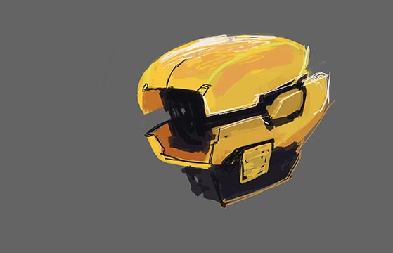

Week 1 - Laser and Vinyl Cutting
My first week in How to Make Almost Anything started with laser cutting, and vinyl cutting experiments.
As part of a team effort, we experimented with the settings for an Epilog (120 watts). Our main challenge was to manually adjust the focus in accordance with our three layered corrugated cardboard. Focus adjustment poses a greater challenge when the material is not perfectly flat and gaps on the sheet, remaining from previous trials break the vacuum seal. Despite these inconsistencies, we managed to create a guide to find out the ideal material thickness.
>See the power setting 70? That is 70% of 120 watts.
This is a peculiarly high setting for cutting cardboard. I found out on my next visit to the shop that if you make long cuts on a bent piece, these settings start fires.

When focus is properly adjusted, it is possible to get nice cuts with little risk of fire. In other words: 5 more hours in the shop
>Next, it was time to create a parametric part for my minimalistic kit of parts.
By adjusting the proportions and adding a single score, I came up with these units.
When combined make something like this.
By adding a chamfer:
Then I made more...
Then combined to stuff like:
Then I moved on to the vinyl cutter to turn a digital painting to an annoying sticker.
Files
Parametric Model (FreeCAD)First Iteration (Rhino)
Second Iteration (Rhino with chamfer)